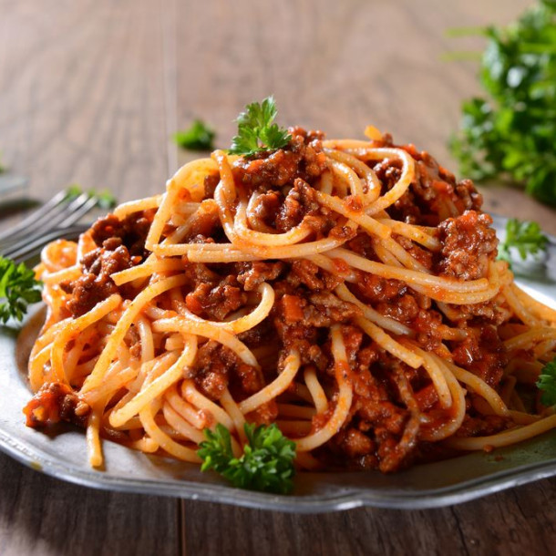

Homepage
Low calorie spaghetti bolognese

Description
I am not reinventing the wheel here. I am just giving you my recipe for a simple, lower calorie version of one of my favourite dishes, the notorious spaghetti bolognese.
Ingredients
- 100gr to 150gr* Spaghetti (The lower calorie version you can find)
- 100gr to 150gr** Lean ground beef (5% prefered)
- 100gr Tomato sauce (again pick a lower calorie version)
*The amount of spaguetti depends on your personal taste and the amount of calories and carbs you need.
**The amount of ground beef depends on the amount of protein you need.
Steps
- Cook the spaghetti in boiling water for the duration indicated.
- Cook the meat in a non sticky pan, without adding anything. If your pan stick, put a very small amount of the oil of your choice on a paper towel and spread it on the pan.
- Once the pastas and the meat are cooked, put them together in a pot and add the tomato sauce.
- Mix it, add some salt and pepper, and voila!